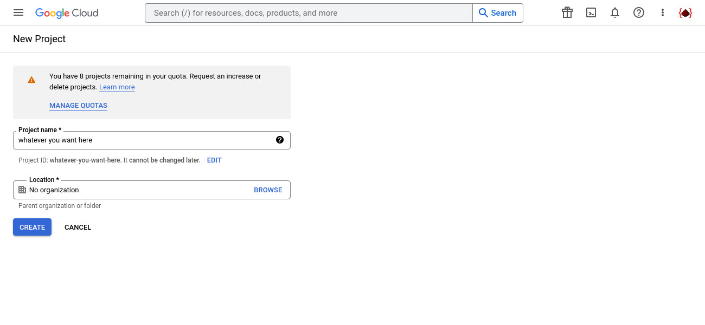
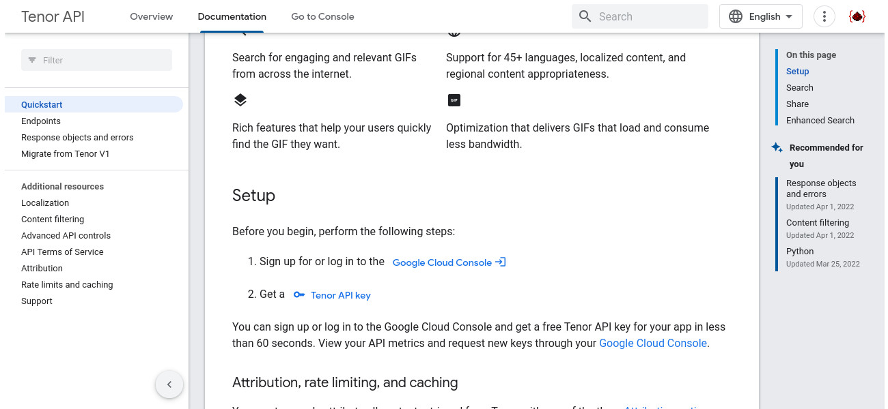
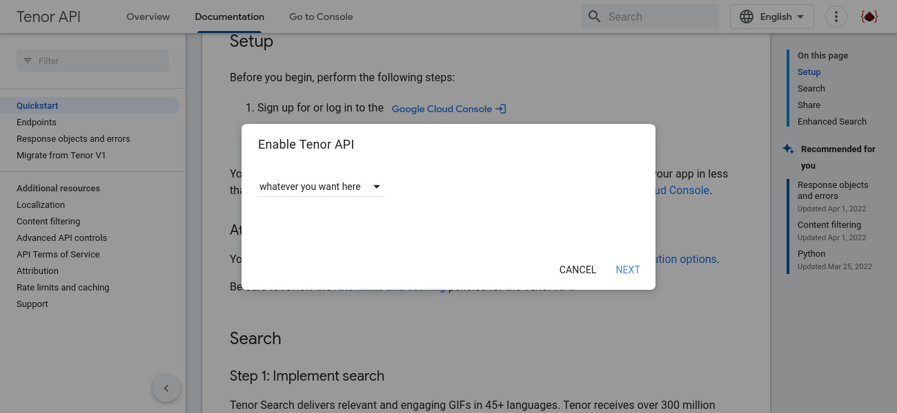
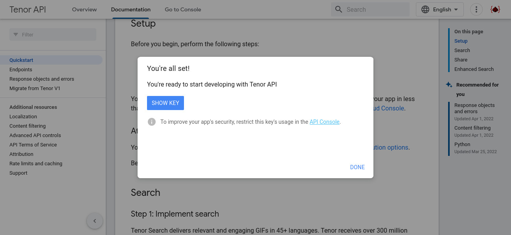
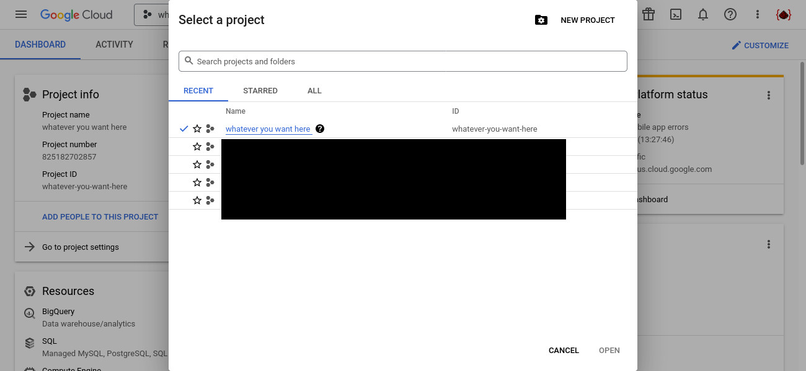
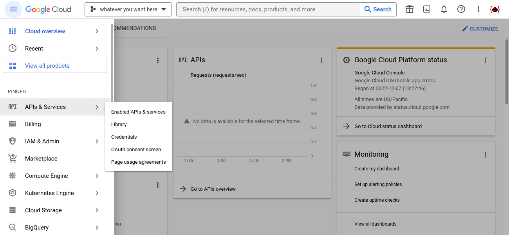
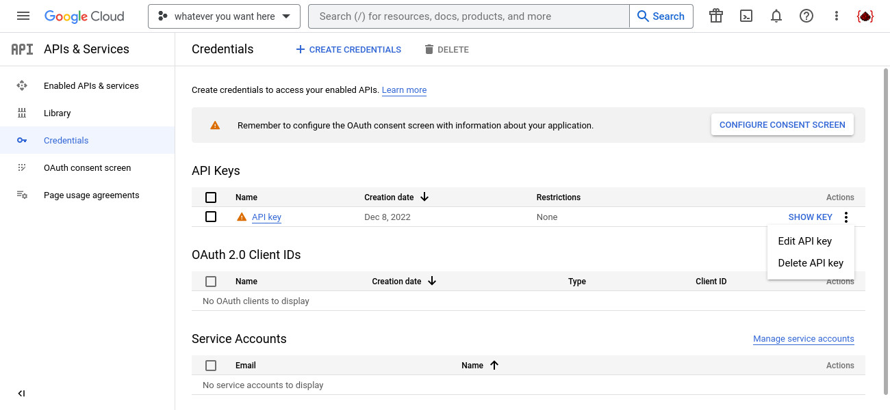
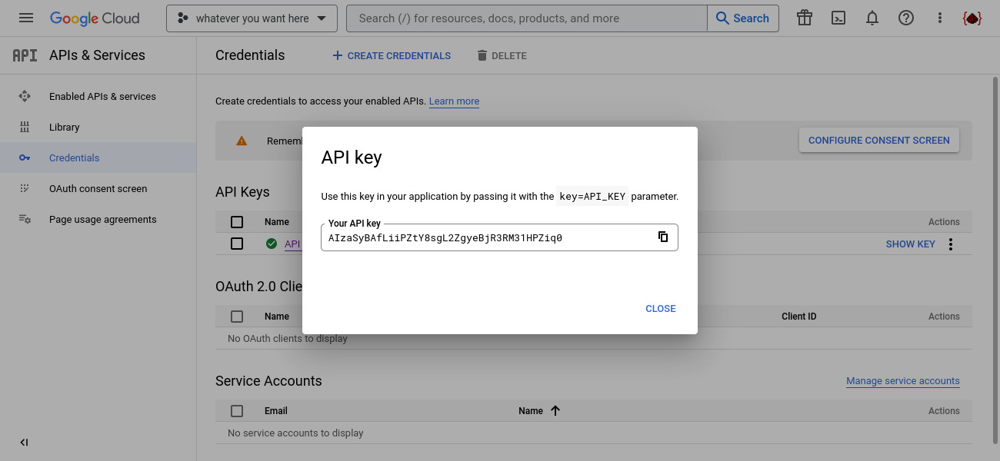

-- Make sure you have a Google Account and make sure it's login in your web browwser
Step 2:-- Go to https://console.cloud.google.com/projectcreate. This will lead you to the Google Cloud page where you can create a new project
Step 3:-- Name this project whatever you want (it doesn't really matter, as long you have a name), and then click "Create". Wait for a few seconds for the project to be created.
Step 4:-- Go to this page and you should see something like this. Click on "2. Get a Tenor API key"
Step 5:-- Select the project you just created by clicking on the dropdown and select the project with the name that you choose. If you don't see the project showing up, try and refresh the page a coule of times. Then click on "NEXT"
Step 6:-- You should now see this, and while you can click the "SHOW KEY" now, I HIGHLY recommend you do the next step, which is restricting the API key to only use the Tenor API.
Step 7:-- Go back to the Google Cloud page, and select the project by clicking on the dropdown on the top of the page, and on the popup, select the project that you've created.
Step 8:-- Click on the hamburger menu (The three line on the top-left corner) -> "API & Services" -> Credentials
Step 9:-- On this page, at the "API key" row, click on the three dot menu, and then click "Edit API key"
Step 10:-- Scroll down until you see "API restrictions", click on "Restrict key", and on the dropdown below, select the "Tenor API" and ONLY "Tenor API". After that, click "Save" to save your changes
 Step 11:
Step 11:-- And finally, click the "SHOW KEY" at the "API key" row. A popup should show up showing the API key, copy the text inside.
